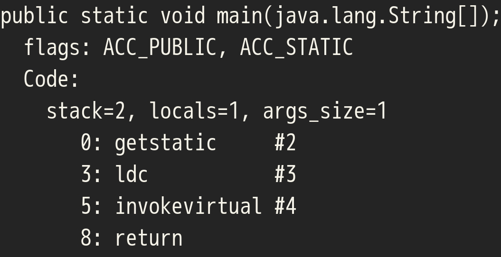

Your browser doesn't support the features required by impress.js, so you are presented with a simplified version of this presentation.
For the best experience please use the latest Chrome, Safari or Firefox browser.
熱血！Scala入門
shigemk2 でググれ

今日はScala初心者がScalaのクラスファイルについて話します
クラスファイルはScalaやJavaでコンパイルしたあとに出来る中間ファイルのことです
この本は名著 熱血!アセンブラ入門にわりとインスパイヤされたパチモンです
熱血!アセンブラ入門P3より

Scalaのクラスファイルをフィーリングでなんとなく読んでみよう
Scalaのクラスファイルを読む前に、まずはJavaのクラスファイルを読んでみる
JavaのHello, World

javac -g HelloWorldJava.java
javap -v -p -c HelloWorldJava
逆アセンブル結果(一部)

さっくりとした構成
前置き部分

定数プール

本体

前置きとか定数プールとかは無視して、本体のところだけ読んでいきます
Hello,World本体(Java)

Hello,World本体(Java)
クラスフィールド読み込み
文字列読み込み
printlnメソッド呼び出し
return void

Hello,World本体(Scala)
クラスフィールド読み込み
文字列読み込み
printlnメソッド呼び出し
return Unit

おんなじだ！
FYI: もとのコードをJD-GUIでデコンパイルすると

こうなる(コンパイル不可能)

たぶんJD-GUIがうまくない
Next: 四則演算
加算プログラム

加算プログラム(他のところは省略)

加算プログラム(他のところは省略)
0: 定数1→スタック
1: スタックの値→ローカル変数2
2: ローカル変数2→スタック
3: 定数2→スタック
4: スタックの値を加算
5: 加算したスタックの値→ローカル変数2